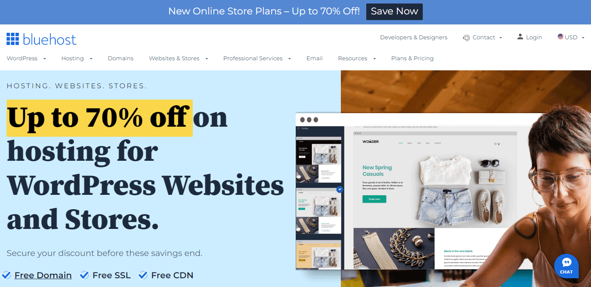
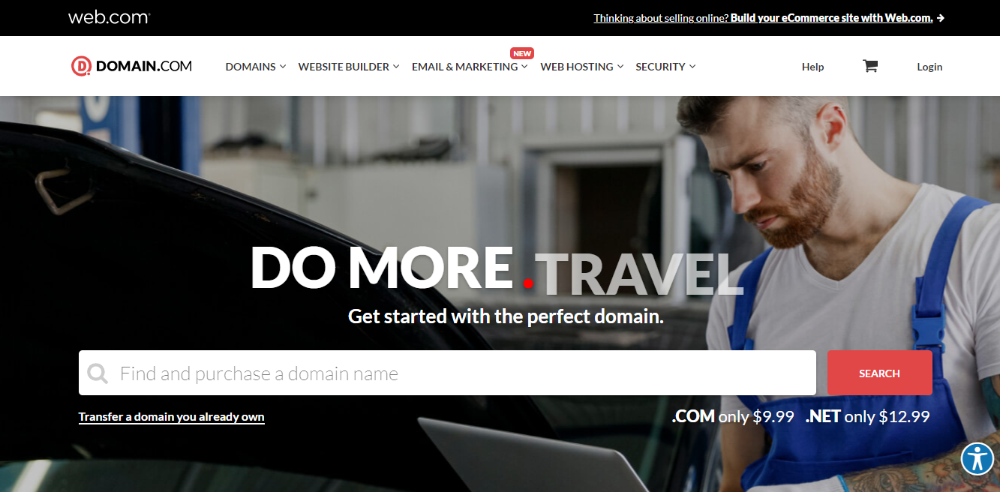
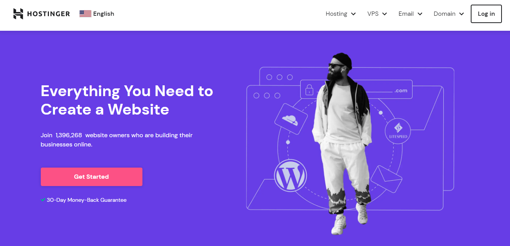
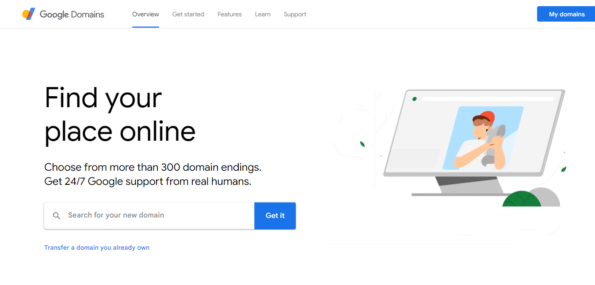
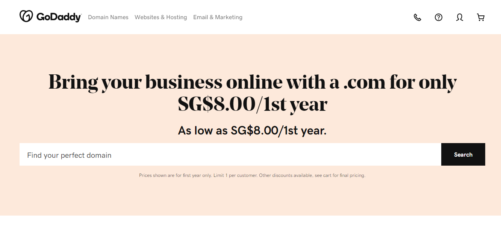
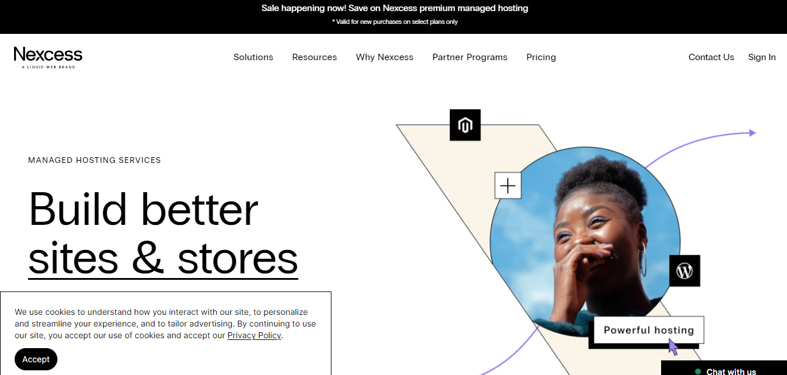
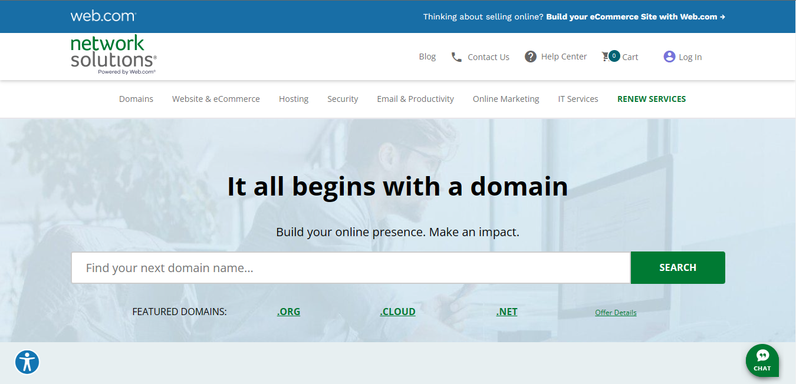

Top best Premium Hosting and Domain Service Provider Sites
Here is a list of popular Premium website hosting and Domain services:
what we have here ↓
1.Blue Host
2.Domain.com
3.Hostinger
4.Google Domain
5.HostGator
6.Godaddy
7.Nexcess.
8.Network Solutions
1. Blue Host
One of the oldest web hosts started in 1996, Bluehost has become the largest brand name when it comes to WordPress hosting. They are an official 'WordPress' recommended hosting provider. With Bluehost, you never have to worry about your website being slow even when there is a lot of traffic. Their 24/7 expert support is always there to help when you need it by phone, email, or live chat. They are rated #1 in web hosting for small businesses. On top of that, they are offering WPBeginner users an exclusive 63% off discount, a Free Domain, Free SSL, and a free Site Builder with templates.
Bluehost is one of the biggest web hosting companies in the world and an official WordPress recommended hosting provider. Bluehost offers a wide variety of hosting plans for beginners and for medium to large businesses with 24/7 customer support. See the complete Bluehost review by our experts to find out if Bluehost is the right choice for you.
The Basic plan is good if you are only going to have 1 website and 10 GB of storage is enough for your project. It also has a limitation on the subdomains you can have, and the databases you can create.With the Plus plan, you can have as many websites as you need and double the storage of the Basic plan.If you get the Choice Plus package, you’ll be awarded with all the Plus features, plus free domain privacy and better backup options (for 1 year). It doesn’t really warrant the much higher price compared to the standard Plus plan.The Pro tier is suitable for those looking for higher performances. The maximum files you can host with this plan jumps from 200,000 to 300,000. It also has permanent advanced backup options.
Bluehost offers its customers a free SSL certification service.In an age of increasingly sophisticated hacking schemes for stealing or damaging a user’s data, an SSL certificate and HTTPS protocol tell visitors your site is trustworthy and secure and that their most sensitive data is safe with you.
2. Domain.com
Domain.com is a simple solution for buying domain names and building your online presence. It’s affordable, easy to use, and offers other integrated services—making it one of the best domain registrars on the market for varying use cases. Benefits like free SSL certificates and enhanced domain privacy and protection help provide security for yourself and your visitors. Overall, Domain.com is a great choice for anyone seeking domain registration services.
Domain.com is an excellent option for most website owners that plan to buy a domain and keep it for themselves. If you’re looking for a way to constantly buy and sell domains, it’s probably not the best option for your needs. The platform can operate strictly as a domain registry, or you can use its additional services for web hosting and design for an all-in-one solution.
While Domain.com is a top choice for many people, it won’t be the best option for everyone. You can see other top recommendations and Domain.com alternatives in our in-depth review of the best domain registrars. Our team researched and reviewed the top domain registrars on the market to narrow down specific use cases for each one
Affordable Pricing: Domain.com is one of the more affordable domain registrars. .Com domains are available for as little as $9.99, while .net domains cost $12.99. Some domains are available for as little as $2.99 per year, so you can choose the domain and price that’s just right for your needs.
Optional Domain Privacy + Protection: Domain.com offers domain privacy and protection services. With other domain registrars, your domain name is searchable in the WHOIS domain registry. Searchers can locate your name, address, and contact information. Domain.com offers WHOIS Domain Privacy, which protects your personal information, letting you control who can see your information through a search. Domain.com’s domain transfer lock provides additional protection to secure your domain. This helps to prevent unauthorized transferring or hijacking of domains so your site stays secure. These two services are available as a bundle for $8.99 per domain.
3. Hostinger
Hostinger is becoming well-known name in the WordPress hosting industry. They offer affordable hosting, 24/7 live chat support, and a robust platform to host your website. Hostinger comes with automatic 1-click WordPress install, managed automatic updates, enhanced security, free CDN, WordPress speed acceleration, and free site migration. They also offer geolocation specific hosting with a choice of 7 data centers in USA, Europe, Asia, and South America. Hostinger serves over 29 million users in 178 countries. On top of all this, they have a special 80% discount for WPBeginner readers combined with free SSL and a free domain name.
Hostinger is a popular web hosting provider with a robust platform to launch websites. They offer a variety of shared hosting plans for everyone from beginners to large companies. Their prices are affordable, and their plans include plenty of useful features. See our expert Hostinger review to decide if it’s the right choice for you.
Hostinger offers cheap hosting plans by limiting the CPU server resources available to customers based on their hosting plan. This is how most shared hosting companies are able to offer affordable web hosting services.
Once your website starts growing and hits a limit, you can upgrade to their VPS or cloud plans. This enables customers to pay as they grow.
Hostinger servers have advanced security modules that assure the best possible protection, such as mod_security, Suhosin PHP hardening, PHP open_basedir protection, and others.It never provide your login and password to anyone. To share access, it's better to use our Access Manager feature.Always use secure and strong passwords.Enable social login (and two-factor authentication) for your hosting account, as well as two-step authentication for your CMS admin dashboard
4. Google Domain
If you’re looking for a service to help you register a domain name, Google Domains is one of the best services you’ll find. In this Google Domains review, we’ll help you understand why we recommend Google Domains by offering comprehensive coverage of what this Google service has to offer.
When you register a domain name, you have to provide your own personal information, like your address and phone number.By default, all this information is publicly available in the Whois registry, which leaves you open to spam or other annoying/malicious activity.
Privacy protection changes that by hiding your information behind generic privacy information.Many domain registrars charge you for privacy protection, sometimes as much as $10 per year.Google Domains, however, includes privacy protection for free as part of your purchase.
DNS, short for Domain Name System, is what connects your domain name to your web server. It’s often called the “phonebook of the Internet”.Each domain registrar has its own DNS service, as do many hosts.But here’s the thing:Not all DNS are created equal, and the DNS you use can have an effect on your page load times.With Google Domains, you get to use Google’s Cloud DNS, which is backed by Google’s own infrastructure. This delivers premium-level speeds at no extra cost to you.
If you want to use your own custom email address (like you@yoursite.com), Google Domains lets you create up to 100 email aliases that you can deliver to your existing email accounts, like Gmail.Or, it’s also super easy to hook Google Domains up to Google Workspace for email hosting, though you’ll need to pay extra for Google Workspace.
5. HostGator
HostGator was founded in 2002 and grew quickly to become one of the biggest hosting companies in the world. You can credit the monstrous growth to their great shared hosting plans, reliable web hosting, and quality customer service.Today it is headquartered in Houston, Texas, and hosts over 10 million domains. They have 850+ employees that offer around-the-clock support and serve businesses of all sizes.It is a subsidiary of Endurance International Group and offers a wide range of web hosting solutions to a massive global customer base.
HostGator guarantees an uptime of 99.99%. If you experience downtime below that, then you will get back one month credit on your account.HostGator offers 45 days moneyback guarantee. Normally, web hosting companies do not offer a moneyback guarantee beyond 30 days. You can choose between monthly and yearly billing periods. Longer billing periods will get you the most discount.HostGator offers free migration service with all new accounts. Their expert team will transfer your website from your previous host at no extra cost during the first 30 days of signing up.
What would you do if you sign up for a host and find that your website is painfully slow and often disappears? You’d have to switch providers, and this will cost you more money and headache.That’s why you want to choose a web hosting provider that is reliably fast with stable performance record all around.The content of your website significantly affects the page load time. For example, if your website has many images, then it will increase the page load time.This affects your server’s speed test results. We wanted to see how fast the HostGator server actually responds and it respond faster than I thought.
HostGator is good for WordPress and highly recommended for anyone who wants to start a WordPress website.It offers 1-click WordPress installation which even lets you pick essential plugins and templates during setup. Plus you get 24/7 tech support which comes in handy for most beginners.
6. Godaddy
Easily one of the better-known domain registrar options on the market, GoDaddy makes it easy to purchase a wide selection of domain names, as well as hosting functionality.You can even use the domain name generator to get ideas for creating a new website.
Similar to Google Domains, GoDaddy keeps things simple and transparent with its domain name pricing options. A .com domain will cost $9.99 for your first year, followed by $9.99 every year after that, and protection is included for free.GoDaddy allows users to choose from a variety of domain name options with a huge selection of extensions (more than 500). You can also migrate your existing domain name to GoDaddy for a $7.99 fee (if you’re using a .com TLD).
GoDaddy has a handful of unique features, including the “Domain Broker” which can help you purchase a domain that already belongs to another company, with the support of a specialist.You can also purchase domain names in bulk, creating lists of keywords for your domains and uploading them as CSV files.
GoDaddy is the largest domain registrar in the world right now, supporting more than 84 million domains, and every domain comes with free privacy protection forever. There’s also a range of tools, like real-time monitoring to ensure your domain is always working as it should be.
7. Nexcess
More than just a service department, we've got a team of experts with community ties and deep platform knowledge available whenever you need them - 24/7/365.
This site has better speed because It is Built with PHP7+, Nginx, visual regression testing, instant auto scaling, an integrated CDN, image compression and more to drive unparalleled performance.
Always-on monitoring, iThemes Security, server access controls, remote monitoring, Web Application Firewalls (WAF), DDoS prevention, and customized malware detection.
We manage traffic bursts with instant auto scaling that bypasses PHP capacity limits, along with instant upgrades and downgrades to help sites meet increased demand.
8. Network Solutions
Ideal for those on the hunt for the best domain registration experience, Network Solutions is a highly respected registrar, offering access to all of the most common TLDs, including .info, .com, and .net. The company also offers web hosting services and domain transfer.
Network Solutions offers a range of options to help you find and purchase the perfect domain name. There’s a convenient domain name search feature, with “bulk search” options. You’ll also be able to browse through premium domain names too.
As a pioneer in the domain name registration landscape, Network Solutions offers some unique features you wouldn’t typically find elsewhere, such as bonus IT support and website building with powerful security tools.There’s even domain name protection in place, which secures your domain for up to 1 year if you can’t renew for any reason.
Bonus specialist services include access to website design and copy options if you need help building your new blog or eCommerce site. There’s also access to a range of email and productivity tools, including support for Microsoft Office and Google Workspace.
Network Solutions is one of the pricier domain name registrars on our list, with the price of a .com domain starting at $20 for your first year, then increasing to $37.99 per year afterward.There are also excess costs for things like WHOIS protection ($23.88 per year), as well as hosting, email and marketing tools, and SSL certificates.
Best free website hosting service FAQs
Pros and cons of free website hosting
There are way more cons than pros for free website hosting. The main (and only) pro is that it’s free, you really don’t pay a dime for it. This might be an okay choice for just trying out yourself in creating a website but you are almost always better off just paying for a good hosting provider, and there are some cheap ones too.
As you can imagine, there are quite a few cons to free website hosting. Performance is vastly inferior to paid hosting, security is questionable, don’t expect too much from customer support (if there’s any), and more often than not, you’re on your own if there’s some trouble with the website. All in all, if you can, stay away from free website hosting and pick a good cheap hosting provider.
Is free website hosting safe?
Free website hosting is as safe as any other hosting provider, with the caveat that less focus is provided on stability and support. This means you cannot presume that any backups will be made or will be reliable, so you must take extra steps to save and download your own data as required. That doesn't mean to say that free website hosting companies are bad or unreliable, just that with paid services you are paying for that stability, support, and reliability.
However, the bottom line is that while free website hosting can be great for small hobby websites, any serious website - even if it's just a contact page - needs to have it's own paid web hosting service. Not only does this imply extra protections for your website, but it also looks more professional if you don't have unnecessary website credits or even ads on your website.
Is free website hosting good?
Yes and no, mostly no. While it is free, there are serious drawbacks to it. You are very limited with what you can do, a good deal of websites aren’t even secured properly, and if anything goes wrong you’re pretty much left to your own devices.
As we mentioned earlier, you’re better off choosing some cheap web hosting provider than going free. Still, it’s ultimately your choice, and free website hosting can be adequate for some specific situations, like newbies who want to dabble a bit with creating a website.
Pros and cons of free Domain
Pros
1. Free domains offer one year free domain registration. so these free domains are useful for blogs or websites which remain alive less than one year.
2. These are useful for websites of college fests,events,competitions etc. because these websites are used only till the completion of the event. after that they are not useful so registering a free domain for this type of websites may save money.
3. Useful for bloggers who want to maintain a blog just upto a period of one yearor less than that.
4. many of the short period websites will depend on free domains inorder to save money. so these free domains are a gift to some of the short period websites.
Cons
1. Free domain offer domain registration free for only one year. After that you should pay for renewal for that domain. These are useful for only short period websites. If you want to develop a website/blog for a long period, then don’t go for free domains.
2. Free domains can't be indexed in search engines easily. if you want a good seo for your blog/website, then forget about free domains and go for a paid domain.
3. Google may ban the free domains. if it happens to your domain service then your blog/website will be no more available in search engines. google has banned .co.cc domain in past(now it is accepting). so if it repeats again then your website will be no more visible in search engines.
4. When you go for a free domain after one year you should change your domain. so when you change your domain after one year then you may loose all your visitors, seo, page rankings, back links, etc.
Pros and cons of Premium website hosting
Pros
1.Speed and Performance
Paid hosting ensures a high speed and solid performance for your hosted services.
Paid hosting providers invest into high-quality dedicated servers and prioritize server maintenance, thus allowing servers to maintain stable performance.
On top of that, paid web hosting typically uses advanced technologies, such as solid-state drives (SSD) instead of hard disk drives, allowing for faster page load speed.
2.Uptime and Reliability
Most paid hosting providers guarantee a certain amount of uptime.
For example, if your hosting provider guarantees 99.99% uptime, you won’t experience downtime longer than 1 hour throughout an entire year combined.
If, however, your web service experiences longer downtime, you’ll easily get your money back.
As such, paid hosting is much more reliable, which allows you to avoid the negative impacts of server downtime, such as customer dissatisfaction and revenue loss.
3.Scalability
Unlike free hosting, paid hosting supports server scaling.
So, if your website or web app is gaining more traction, you can easily add more resources to your server so that it can handle more incoming traffic.
By scaling your website, you can effectively increase its performance and avoid downtime, even if your website experiences an unforeseen traffic spike.
4.Customer Support
Paid hosting offers reliable and responsive customer support.
Paid hosting, on the other hand, comes with real-time customer support that’s typically available 24/7/365 and via different channels.
High-quality customer support is especially important when your web service experiences downtime as you can quickly get help and resolve the problem.
5.High-End Security
Paid hosting provides high-end security, so you can be sure that your hosted services stay safe and secure from cyberattacks and malware.
Depending on the specific hosting provider, paid hosting can come with software security, firewall, DDoS protection, malware scanning, and other security features.
What’s more, paid hosting comes with data backup, so, in case the files on your hosted service get corrupted, you can easily restore your data.
Cons
There are not many cons of premium hosting but for beginners you have to pay a lot of money to buy the premium hosting.
Pros and cons of Premium domain
Pros
Register your domain name for as long as you like.Phone and live chat support for plenty of customer guidance.Lots of emails, marketing, and website building tools and services.Excellent customer support over chat, email, and phone, as well as a dedicated help center
Cons
Domain renewal costs can be extremely expensive.
Protection features are an expensive add-on.